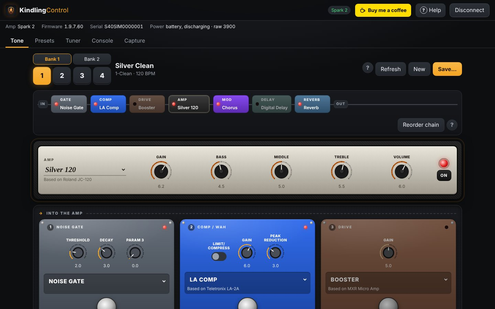
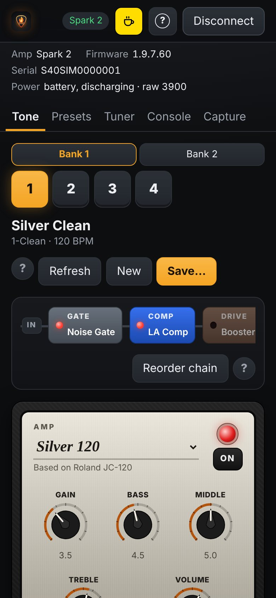
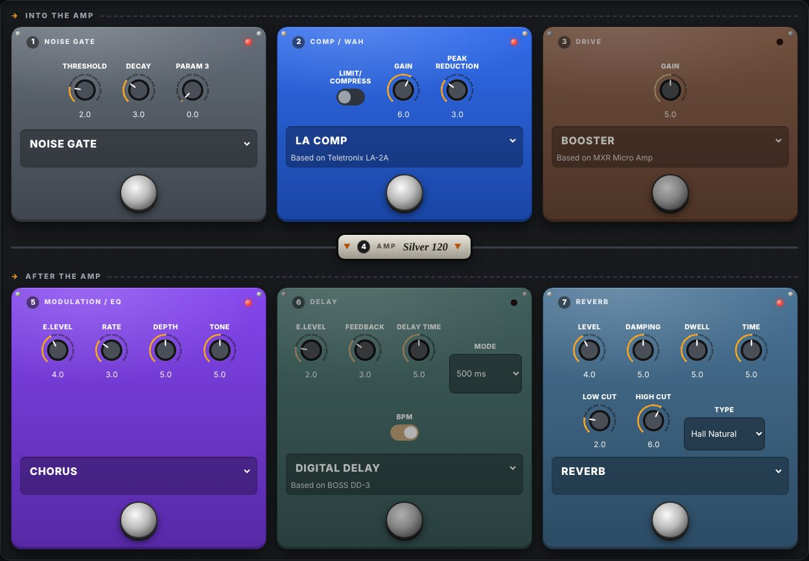
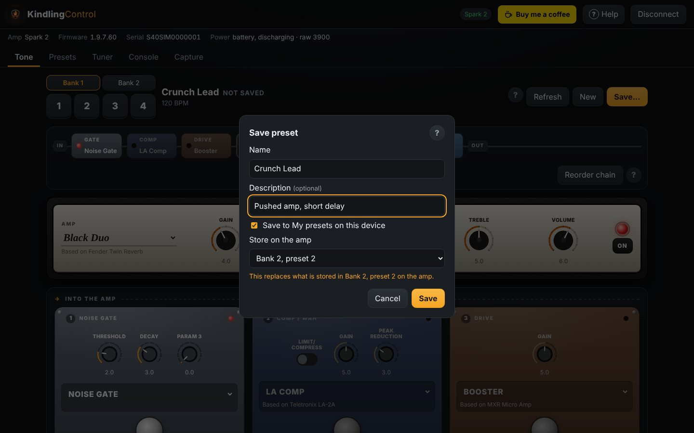
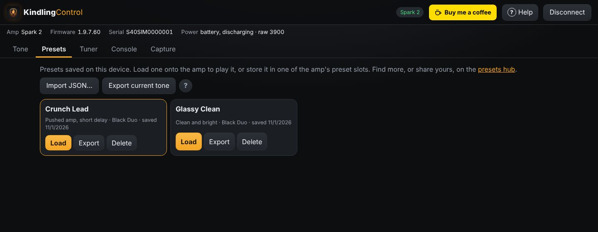
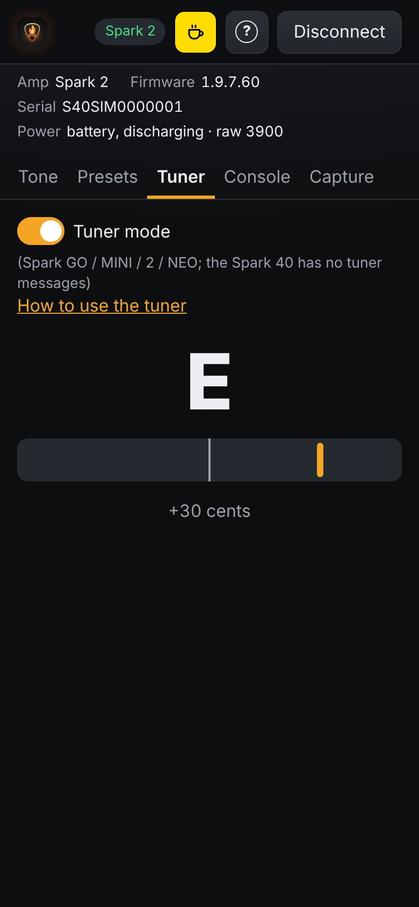
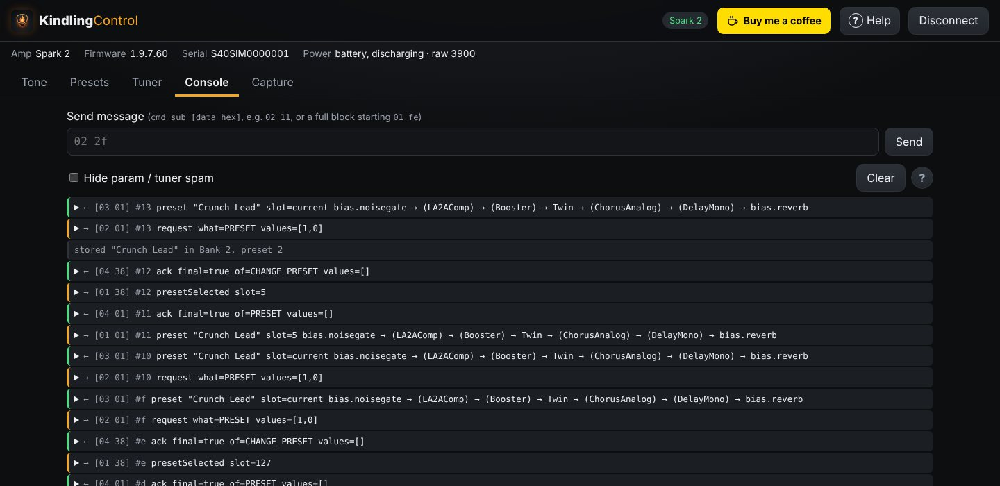

A rig you can see
Your amp appears as an amp head with chicken-head knobs: gain, bass, middle, treble, volume. Every effect is a stompbox with real knobs and a footswitch, laid out in signal order.
Free & open source · for Positive Grid Spark amps
KindlingControl is an independent app for your Spark amp: dial in tones on a real-looking amp and pedalboard, flip through both Spark 2 banks, build and save your own presets, and tune up. No account, no tracking, nothing to pay.
For Windows, macOS, Linux and Android. An iPad and iPhone app is planned. Android early access: join the private test group on Google Play.


Built for
KindlingControl focuses on the controls you use every time you pick up the guitar, and keeps them one tap away.
Your amp appears as an amp head with chicken-head knobs: gain, bass, middle, treble, volume. Every effect is a stompbox with real knobs and a footswitch, laid out in signal order.
Turn a knob on the amp and the screen follows. Turn one on screen and you hear it right away. Press a preset button on the amp and the app keeps up.
Switch presets 1–4 in bank 1 or bank 2. Changing bank keeps your place, so preset 3 stays preset 3.
Start a new tone from scratch or from what you're playing, shape it, then keep it on your device, store it in any amp slot, or export it as a file.
Swap amps and effects from each pedal's nameplate, which also shows the real gear the model is based on: Fender Twin, Klon Centaur, Space Echo and more.
Built-in tuner on amps that support it, battery and charging status, and a console that decodes every message to and from the amp.





Found a sound you love? Export it from the Presets tab and share it on the presets hub. Looking for something new? Browse what other players have made, download a preset and import it into the app. Every shared preset is free to use.
The amp talks to one app at a time. Quit the Spark app on your phone, or switch the phone's Bluetooth off.
Download the desktop app for Windows, macOS or Linux, or the Android app, from the releases page. To try the Android app through Google Play instead, join the private testing group.
Tap Connect and pick your amp from the list. KindlingControl reads its name, presets, and battery, then shows your current tone.
Pick presets, turn knobs, swap models, then press Save… when you've found something you like.
| Device | How |
|---|---|
| Android | The Android app (private test on Google Play) |
| Windows · macOS · Linux | The desktop app |
| iPad · iPhone | Native app (planned) |
Every screen is explained in the user guide, which is also built into the app under Help.
The Spark talks to its app over Bluetooth with a compact binary protocol. Positive Grid has never documented it. KindlingControl is a clean re-implementation in JavaScript, built on years of careful reverse engineering by the Spark community.
Paul's Spark Protocol Description maps out the message framing, the 7-bit packing, the msgpack-style values, and the commands for presets, effects and knobs. It's the foundation everything here is built on. Paul credits Yury Tsybizov and Justin Nelson for their help, and Ian McKellar for spotting the MIDI SysEx and msgpack connections. His Spark-Parser captures also help test KindlingControl against real amp traffic.
An open-source ESP32 foot controller for Spark amps. Its field-tested handling of the Spark 2, MINI and GO gave us write sizes and timing, bank numbering, battery status and the tuner. Its effect reference supplies the parameter names for every model.
Read the full protocol write-up in docs/PROTOCOL.md, or record what the official app does with your own amp. See the capture guide.
No. KindlingControl is an independent, open-source project. Positive Grid doesn't make or endorse it.
Only when you ask it to. Trying tones and creating new presets uses the amp's temporary slot. Storing something in one of your preset slots always goes through Save…, which warns you before anything is replaced.
It has been used with a Spark 2. The other models use the same community-documented protocol, so they should work, but if something's off on yours, please open an issue.
Not yet. It's planned, and needs a native build signed through Apple. Browsers on iOS and iPadOS can't use Bluetooth, so a web page can't fill the gap.
The Spark seems to use a fixed order: gate, comp, drive, amp, mod, delay, reverb. KindlingControl has an experimental Reorder chain that tries a new order safely and tells you whether your amp kept it.
The app doesn't. There's no account and no analytics, and your presets stay on your device unless you export them. If you share presets on the presets hub, we keep your email address to send you sign-in links (it's never shown to anyone), the display name you choose, and the presets you upload. Browsing and downloading presets needs no sign-in.